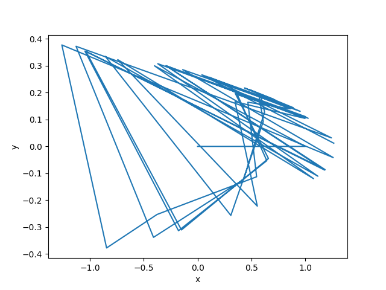
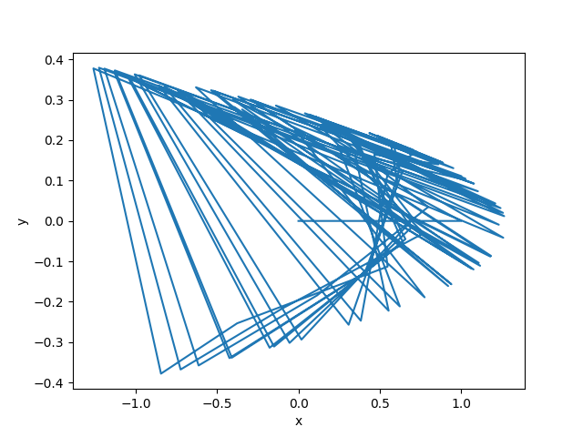
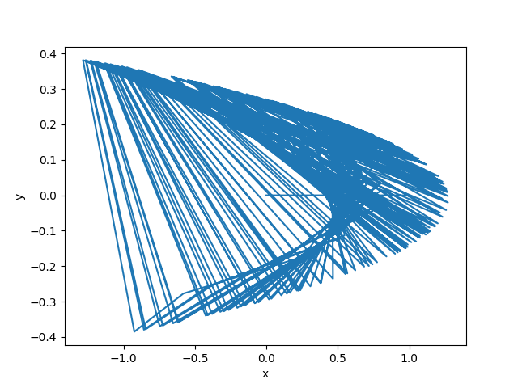
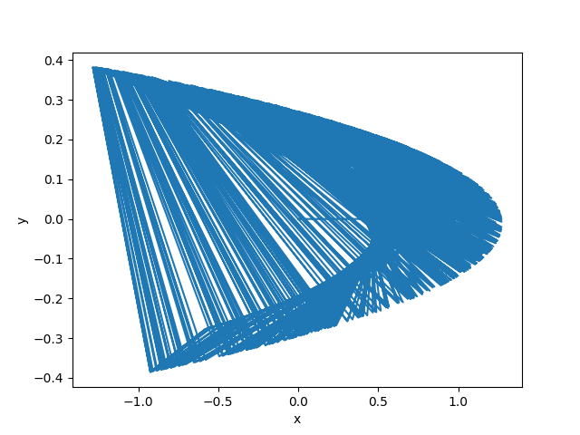
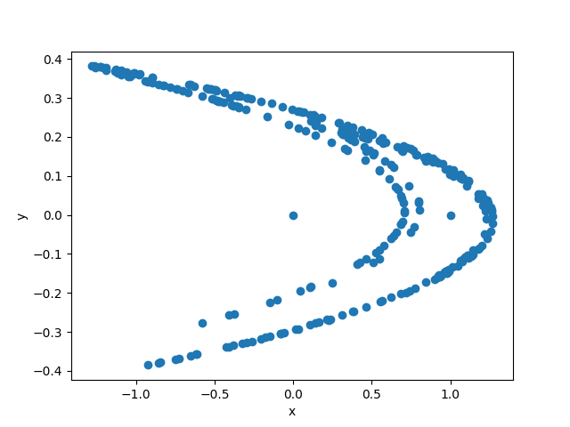
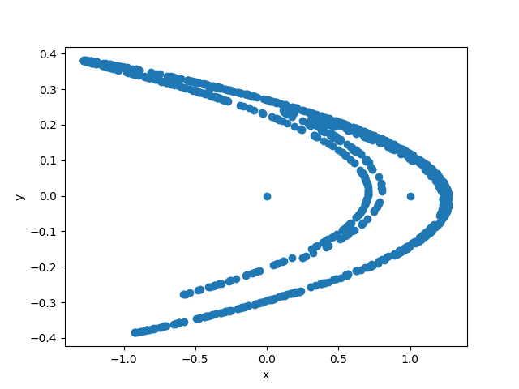
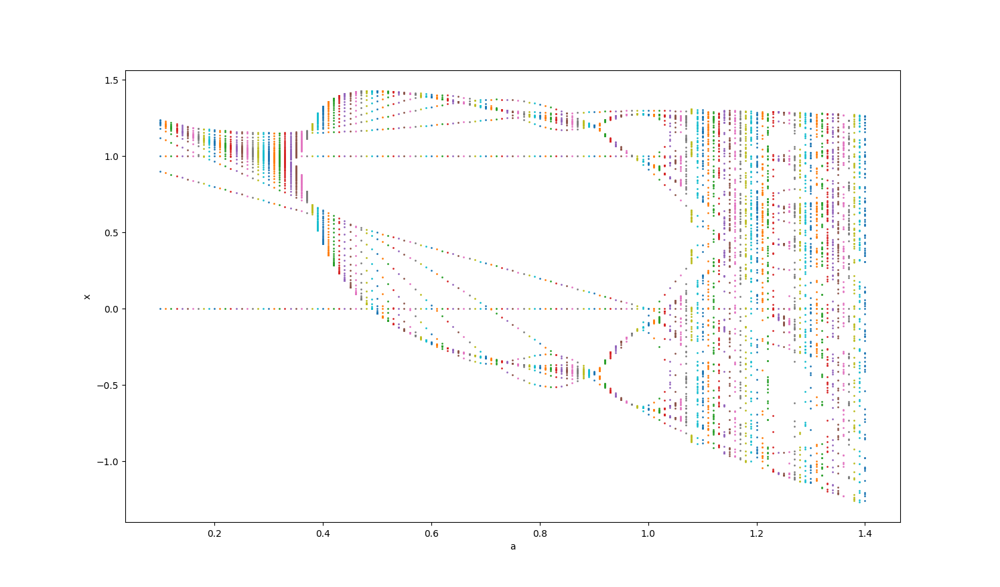
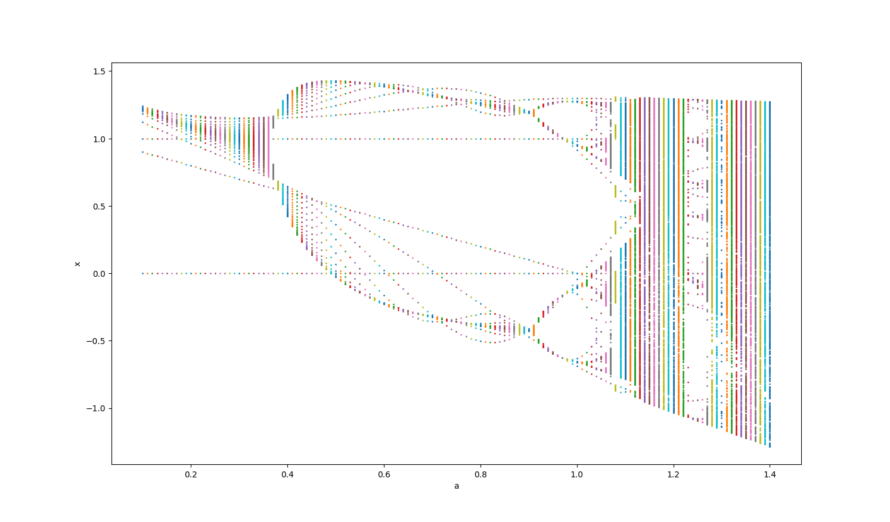
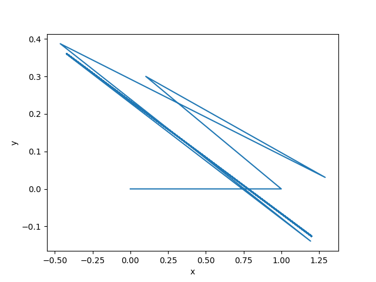

Hénon map绘制程序
Hénon map的定义
数学上，Hénon map是一种位于离散时间上的动态系统。它是被广泛研究的代表混沌现象的动态系统之一。其迭代表达式为：
{xn+1=1−axn2+ynyn+1=bxn
该映射通过迭代产生轨迹。亦即，从一点 u0=(x0,y0)开始代入上述表达式得到下一点坐标，如此迭代得到轨迹[u0,u1,...,uN]
程序功能
本程序通过 python 编程实现以下功能：
- 计算 Hénon map 的函数：对任意输入a、b、初始值u0以及轨迹长度 N ，输出厄农映射的轨迹[u0,u1,...,uN]
- 利用编写的函数计算经典 Hénon map 的轨迹: 固定参数值为 a=1.4, b=0.3, u0=(0,0) 时，输入N值，得到轨迹图。（以 x 为横坐标， y 为纵坐标）
- 利用编写的函数计算 Hénon map 的 orbit digram ，即固定 b=0.3 ，改变 a 后获得⼀系列 Hénon map 的轨迹，然后以 a 为横轴，x为纵轴绘制 orbit digram 图。
- 分析上述画出的orbit digram，找到 Hénon map 可以收敛到⼀条周期性轨道的 a 值，计算该 a 值对应的 Hénon map 的轨迹并绘图。
解答思路
- 基于迭代表达式利用循环结构计算 Hénon map 的函数
- 基于 1 的代码，利用 matplotlib 作出轨迹图
- 基于上述代码，利用嵌套循环结构作出不同 a 值对应 x 值的图
- 基于 3 的代码，增加 N 的大小作图，观察比较不同 a 中，不重合的 x 数据点数量的变换，其中数量不随 N 增加的即为可能的 a ；不断缩小 a 的范围，得到收敛到周期性轨迹的 a 值为0.8975.
代码使用及结果示例
1.计算 Hénon map 函数的代码文件名为：henon_map1.py，通过输入任意输入 a、b、初始值 u0 以及轨迹长度 N ，可输出厄农映射的轨迹 [u0,u1,...,uN] 。其中初始值 u0 的输入中应以空格隔开 x 、 y 坐标。
2.绘制经典 Hénon map 轨迹图的代码文件名为：henon_map2.py, 通过输入 N 值，即可得到轨迹图。
示例：
N =50时的轨迹图

N =100时的轨迹图

N =300时的轨迹图

N =1000时的轨迹图

此外如下修改第18行代码，则可以绘制散点图
plt.scatter(x.y)
示例：
N =300时的散点图

N =1000时的散点图

3.绘制 Hénon map 的 orbit digram 的代码文件名为：henon_map3.py，通过输入 a 的最大最小值及步长，以及 N 值，即可得到 orbit digram 图。
示例：
0.1≤ a ≤1.5,步长0.1， N =50
![0.1≤a≤1.5,步长0.1，N=50] (3_0.1-1.5_50.png)
如需更细致观察点的重合情况，可修改第21行代码如下，改变 s 的值即为调节绘制点的大小。
plt.scatter([a]*(N+1),x,s=1)
0.10≤ a ≤1.40,步长0.01， N =100，s =1

0.10≤ a ≤1.40,步长0.01， N =1000，s =1

4.观察上2张图，区间[0.4,1.2]可能存在所求 a .利用3的代码，不断缩小 a 的区间范围和步长，可得到使轨迹收敛到周期性轨迹的一个 a 值，以此为参数作图的代码文件名为：henon_map4.py，得到结果如下：
a=0.8975，N=100时的轨迹图
